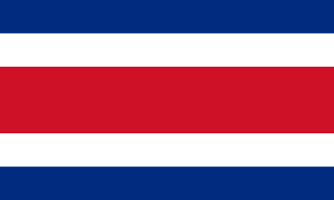
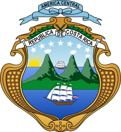
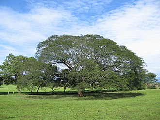

Símbolos Patrios

Fue creada el 29 de septiembre de 1848 junto con el Escudo
Nacional, luego de la declaración de la República el 31 de agosto
de 1848. La concepción y diseño de la actual bandera, vigente
desde ese año, correspondió a Pacífica Fernández Oreamuno, esposa
del primer presidente y fundador de la República, José María
Castro Madriz.

Fue decretado el 29 de septiembre de 1848. Consiste en un marco
dorado que representa el grano de oro (el café). Dentro del marco
hay tres volcanes humeantes, de color verde azul, que simbolizan a
los volcanes y las tres cordilleras que cruzan el país y un
extenso valle verde claro entre dos océanos azules (océano
Pacífico y mar Caribe, que bañan las costas del oeste y el este
del país, respectivamente, al igual que las de Centroamérica). En
cada uno de éstos hay un buque mercante representando la historia
marítima del país. En el horizonte, a la izquierda del escudo, se
aprecia un sol naciente de oro viejo.

El árbol de Guanacaste fue declarado como el árbol nacional de
Costa Rica el 31 de agosto de 1959, durante el gobierno de Mario
Echandi Jiménez. Fue escogido como homenaje a los guanacastecos,
por su Anexión del Partido de Nicoya al país en 1824.
Historia
La interpretación de la historia antigua de Costa Rica significa el
análisis de muchos milenios y el estudio de su espacio de
interacción, generalmente variable a través del tiempo. El periodo
de estudio que corresponde a la época precolombina de Costa Rica
abarca desde la llegada de los primeros pobladores, alrededor de
12.000 años antes de Cristo, hasta el contacto de las sociedades
autóctonas con los europeos, en 1502.
La evidencia más antigua de ocupaciones humanas en Costa Rica se
asocia a la llegada de grupos de cazadores-recolectores alrededor de
7 000 -10 000 años antes de nuestra era, con antiguas evidencias
arqueológicas (fabricación de herramientas de piedra) localizadas en
el Valle de Turrialba, en los sitios llamados Guardiria y
Florencia-1, donde se han encontrado áreas de cantera y taller, con
presencia de puntas de lanza tipo clovis (norteamericana) y cola de
pez (sudamericana), lo cual abre la posibilidad de que en esta zona
convergieran dos tradiciones diferentes de cazadores especializados.
Los pobladores de esta época eran bandas nómadas, de unos 20 a 30
miembros. Además de las especies que hoy siguen existiendo, entre
sus presas habituales se hallaban animales de la llamada megafauna,
tales como armadillos y perezosos gigantes, mastodontes, etc, los
cuales se extinguieron alrededor de 8 000 años antes de nuestra era,
por lo que los primeros pobladores tuvieron que adaptarse a la caza
de especies menores y desarrollaron estrategias más apropiadas a las
nuevas condiciones.
La agricultura incipiente aparece hacia 5 000 antes de nuestra era,
principalmente dada por tubérculos y raíces. Para el primer y
segundo milenios antes de nuestra era ya existían comunidades
agrícolas sedentarias, pequeñas y dispersas, aunque la transición de
la caza y recolección a la agricultura como principal medio de
subsistencia en el territorio es aún desconocido. Entre 7 000 y 2
000 antes de nuestra era, se dio la manufactura de instrumentos de
piedra, madera y hueso, como raspadores, cuchillo y puntas de lanza
para la caza y el procesamiento de alimentos. La adopción de la
agricultura fue un proceso gradual, como una alternativa a la caza y
recolección.
Hacia 2000-300 antes de nuestra era, ya existían comunidades
agrícolas sedentarias, pequeñas y dispersas, de organización tribal
con relaciones igualitarias entre los individuos y organizada por
parentesco, que contaban con utensilios cerámicos y herramientas de
piedra para labores agrícolas. Aparece el uso más antiguo que se
conoce de la cerámica, con fragmentos de ollas, vasijas cilíndricas,
platones, tecomates (de predominio en Guanacaste) y otras formas de
vasijas, decoradas con técnicas como incisos o acanaladuras,
estampados y modelados.
Entre 300 antes de nuestra era y 500 de nuestra era, dependiendo de
la región, se da el cambio de una organización tribal a una sociedad
cacical, motivada por factores como el crecimiento poblacional y las
relaciones de intercambio. Se da la construcción de basamentos con
cantos rodados, montículos, hornos, pozos de almacenamiento, y
estatuaria. El maíz llega a consolidarse como el cultivo principal
en algunas regiones, mientras que en otras se da un sistema mixto,
además del uso de recursos costeros (pesca) y cacería. En este
periodo aparece la producción y uso de artefactos de jade y otras
piedras verdes, metates ceremoniales, remates de piedra para
bastones y cerámicas especiales, se inicia el uso de objetos de
metal (cobre y oro) en especial en el Valle Central, el Caribe
Central y Norte. En este periodo también se registran los objetos de
metal más tempranos (cobre y oro), encontrados sobre todo en el
Valle Central en los primeros siglos de nuestra era.
Extensión Territorial
Costa Rica posee un territorio con un área total de 51 100 km².
Limita con Nicaragua al norte, el mar Caribe al este, Panamá al
sureste y el océano Pacífico al oeste. En cuanto a los bordes
marítimos, colinda con Panamá, Nicaragua, Colombia y Ecuador.910
Cuenta con 5 137 000 habitantes según su última proyección
demográfica. Su capital, centro político y económico es San José, y
su idioma oficial es el español.